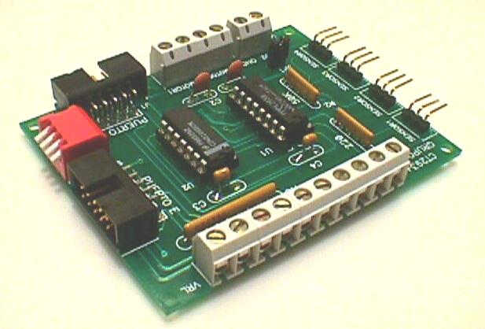
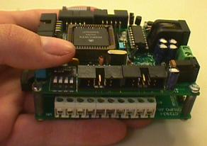
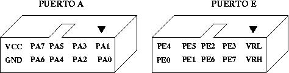
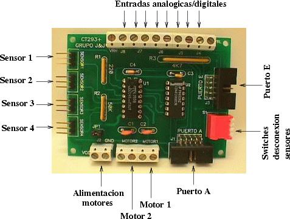
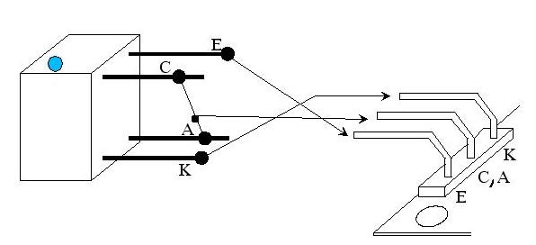

| TARJETA CT293 |
| [Introducción] | [caracteristicas] | [Autores] | [Licencia] | [Historia] | [Puertos] | [Alimentación] | [Download] | [Links] | [Noticias] | [Agradecimientos] |

La tarjeta CT293+ proporciona al sistema tower la posibilidad de controlar motores y leer sensores. Está diseñada para adaptarse perfectamente a la tarjeta CT6811, aunque se puede usar con cualquier otro microcontrolador.

La tarjeta CT293+ se diseñó especialmente para la construcción de robots móviles y junto con tarjeta CT6811 constituye una plataforma para su rápida construcción.
Esta placa se realizó cuado los autores estaban estudiando en la ETSI de Telecomunicación de la UPM, y eran conocidos como Grupo J&J. Los primeros robots en los que se probó fueron Quark y Monumental, y más tarde formó parte del microbot Tritt.
La tarjeta CT293+ tiene dos puertos, denominados A y E, puesto que se pueden conectar directamente a los puertos A y E de la tarjeta CT6811.

| PA0: Estado sensor 1 | PE0: Entrada analógica/digital 1 |
| PA1: Estado sensor 2 | PE1: Entrada analógica/digital 2 |
| PA2: Estado sensor 4 | PE2: Entrada analógica/digital 3 |
| PA3: Motor 1, ON/OFF | PE3: Entrada analógica/digital 4 |
| PA4: Motor 2, ON/OFF | PE4: Entrada analógica/digital 5 |
| PA5: Sentido de giro Motor 1 | PE5: Entrada analógica/digital 6 |
| PA6:Sentido de giro Motor 2 | PE6: Entrada analógica/digital 7 |
| PA7: Estado sensor 3 | PE7: Entrada analógica/digital 8 |

La conexión de los sensores de infrarrojos de tipo CNY70 se realiza de la siguiente manera:

La CT293+ se alimenta con 5v, a través de los puertos de expansión (puerto A o Puerto E). La alimentación de los motores se puede hacer de forma independiente a través de una clema. En ese caso hay que desconectar el jumper JP1.
| TARJETA CT293+ |
| ct293.pdf (1.1 MB) | Manual de usuario de la tarjeta CT293+ |
| ct293.sxw (1.1 MB) | Fuentes del manual de usuario, para OpenOffice |
| ct293-sch.pdf (27KB) | Esquemático en pdf |
| ct293.sch (6 KB) | Esquemático, en Orcad |
| ct293.pcb (40KB) | PCB, en Tango |
| ct293.net (2 KB) | Fichero netlist, para Tango |
| ct293-brd1.pdf (14KB) | PCB. Cara de los componentes (cara de arriba) |
| ct293-brd2.pdf (15KB) | PCB. Cara de abajo |
| ct293-brd3.pdf (15KB) | PCB. Serigrafía |